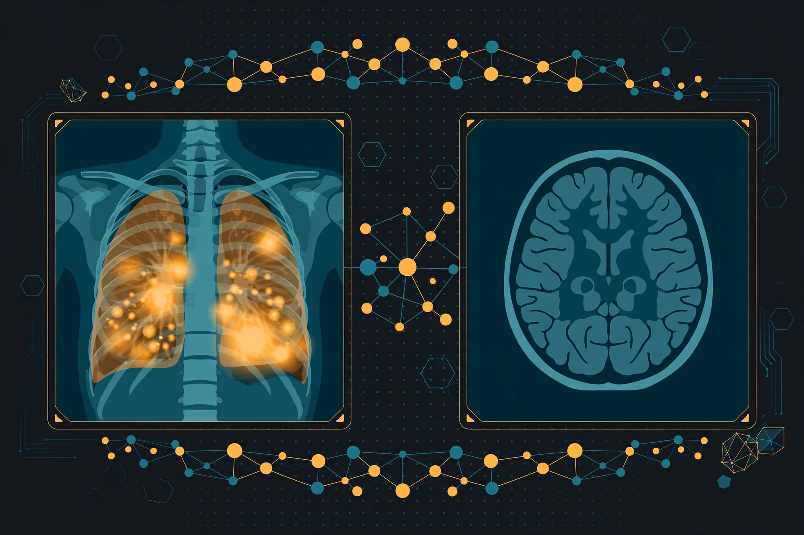

LIVE DEMO
MedVision AI
Clinical decision support — a second pair of eyes for radiologists. Five modalities with deep-learning models and Grad-CAM heatmaps grounding vision-language explanations, plus a disclaimer on every export.
Brain MRI 92.0%Skin 85.07%Ultrasound 79.13%Chest X-ray · 14 labels
DenseNet121ConvNeXtEfficientNetGrad-CAMStreamlit